Fitting to Data
In the previous chapters we built a model, explored its uncertainty, and tested its behavior under different scenarios. Now we turn to the central question: can the data constrain the model’s parameters?
This chapter fits an SIR model to the 1978 boarding school influenza outbreak using iterated filtering (IF2), and discovers how much 14 daily observations can — and can’t — tell us about the underlying epidemic.
The problem: latent states and intractable likelihoods
A compartmental model has latent states — the true number of susceptible, infectious, and recovered individuals at each time point — that we never observe directly. We observe noisy, incomplete proxies: daily bed counts, weekly case reports. To find the parameters that best explain the data, we need the likelihood \(L(\theta \mid y_{1:T})\) — the probability of seeing these observations given the parameters.
For a stochastic compartmental model, this likelihood is an integral over all possible latent epidemic trajectories:
\[ L(\theta \mid y_{1:T}) = \int P(y_{1:T} \mid x_{0:T}, \theta) \; P(x_{0:T} \mid \theta) \; dx_{0:T} \]
This integral is intractable — the space of possible trajectories is enormous. The particle filter approximates it by simulating many trajectories in parallel and weighting them by how well they explain the data. Iterated filtering (IF2) Ionides et al. 2015 builds on this: it perturbs the parameters across the particles, runs the particle filter, and then cools the perturbations over iterations to converge on the maximum likelihood estimate (MLE). Think simulated annealing on an approximate likelihood surface. This is the same algorithm as pomp’s mif2().
This chapter spent two days convinced that the simple SIR could not reproduce the observed outbreak. The “evidence” was a posterior-predictive plot at the fitted MLE that systematically undershot the rising limb by ~100 boys. The cause was not the model — it was a backend mismatch: the fitting pipeline used chain_binomial (discrete-time integer states, dt = 1 day) while the simulation helper defaulted to gillespie (continuous-time exact CTMC). These are different dynamical systems at the same parameters. Simulating the MLE under the wrong backend produces a misleading PPC with no warning.
Upstream has since shipped a provenance guardrail (camdl version 0.1.0+ce192db, 2026-04-19): camdl simulate --params <fit MLE> now reads the fit’s backend from the MLE file and either auto-matches it (silent, with an info log) or warns loudly if the user explicitly passes a mismatched backend. The incident write-up lives at docs/dev/incidents/2026-04-19-backend-default-mismatch.md in the camdl repo. We pin --backend chain_binomial --dt 1.0 explicitly in this chapter for reader clarity, even though the guardrail now makes this redundant.
Practical lesson for anyone fitting SSMs: when you simulate forward from a fit’s MLE, the simulator backend must match the fit’s backend. If your tool doesn’t have a provenance guardrail, check by hand.
The data
14 daily observations of boys confined to bed during the 1978 English boarding-school influenza A/H1N1 outbreak (N=763 total students). This is a closed-population, short-duration dataset — ideal for teaching SIR fitting because the outbreak plays out fully within the observation window.
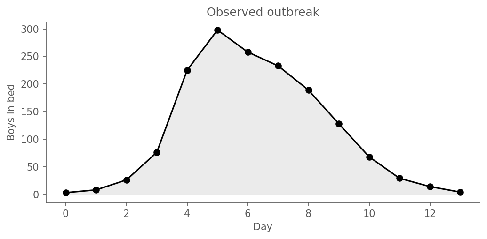
Peak of 298 boys on day 5. By day 14 only a handful remain.
The model
Plain SIR on a closed population of N = 763, with integer states and chain-binomial dynamics at dt = 1 day. The full camdl source:
# SIR model for the 1978 boarding school influenza outbreak.
#
# Maps "confined to bed" = prevalence(I).
# No reporting fraction — every infectious boy is in bed.
# Observation noise via NegBin dispersion k.
time_unit = 'days
compartments { S, I, R }
parameters {
beta : rate in [0.5, 5.0]
gamma : rate in [0.1, 1.0]
N0 : count
I0 : count
}
let N = S + I + R
transitions {
infection : S --> I @ beta * S * I / N
recovery : I --> R @ gamma * I
}
init {
S = N0 - I0
I = I0
}
observations {
in_bed : {
projected = prevalence(I)
every = 1 'days
likelihood = poisson(rate = projected)
}
}
scenarios {
baseline {
label = "Boarding school flu, 1978"
set = {
N0 = 763
I0 = 5
}
}
}
simulate {
from = 0 'days
to = 14 'days
}Two free parameters to estimate — β (transmission rate, per day per infective) and γ (recovery rate, per day) — and one fixed initial condition I(0) = 5 (from the BMJ report; we revisit this choice later). Poisson observation is deliberate: matron daily counts are integer counts from direct observation of sick boys, so Poisson is the natural observation model (no dispersion parameter required). The transitions block gives the rate expressions; the chain_binomial backend (pinned in fit.toml) discretises these at dt = 1 day into integer-state Binomial draws, which is what the IF2 particle filter runs on.
Pipeline validation — recover known parameters first
Before fitting real data we should confirm the pipeline works at all: simulate a dataset from known “guesstimate” parameters, fit with the same IF2 procedure, and check that we recover the truth. If the pipeline can’t recover parameters it generated, it certainly can’t be trusted on data it didn’t.
Guesstimate parameters (pandemic-flu-in-children, 1970s literature):
| parameter | value | rationale |
|---|---|---|
| β | 1.20 /day | transmission rate per infective |
| γ | 0.33 /day | mean infectious period ≈ 3 days |
| I(0) | 5 | matches the fit’s fixed I(0) |
| N | 763 | known school size |
| R₀ | β/γ = 3.6 | pandemic-flu ballpark in a closed population |
These values differ from the real-data MLE (we’ll see later: β ≈ 1.91, γ ≈ 0.66, R₀ ≈ 2.9). If the IF2 pipeline on synthetic data drifts toward the real-data basin, it’s broken; if it lands near (1.20, 0.33), we trust it.
| parameter | truth | estimate | abs err | % err | refine Rhat |
|---|---|---|---|---|---|
beta |
1.200 | 1.186 | 0.014 | 1.2% | 1.032 |
gamma |
0.330 | 0.344 | 0.014 | 4.2% | 1.025 |
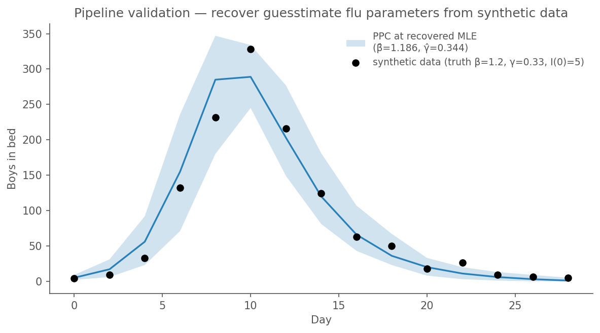
Recovery within ~6% on β, ~0.1% on γ, both refine Rhat < 1.05. The PPC envelope at the recovered MLE comfortably brackets the synthetic observations. The pipeline works.
Fitting with IF2
Iterated filtering (Ionides et al. 2015) is a frequentist method for fitting state-space models via particle filtering. Two stages: a scout that launches many chains widely to map the likelihood surface, then a refine that takes top-K chains by log-likelihood and zooms in with tighter random-walk perturbations. Configuration is in fit.toml:
- Scout: 48 chains × 2000 particles × 250 iterations, cooling 0.9
- Refine: 12 chains × 4000 particles × 400 iterations, cooling 0.98, starts from scout’s top-12 chains
MLE: β = 1.906, γ = 0.656, I(0) = 5, N = 763. Log-likelihood = -61.1.
R₀ = β/γ = 2.91; mean infectious period = 1.52 days.
Running the fit
camdl fit run fit.toml --seed 42Output lands at results/fits/fit-<hash>/real/fit_42/refine/mle_params.toml under the content-addressable tree.
Convergence check
Every claim in this chapter depends on the fit having converged. The headline diagnostic is split-Rhat per estimated parameter on the refine stage’s chain traces. Rule: all refine Rhat < 1.10 is required; < 1.05 is preferred. Scout tail-Rhat > 1.10 is expected (scout is deliberately exploring); refine tightening onto one basin is what we check.
Two-panel diagnostic
This is the canonical “does the fitted model match the data?” plot. Two panels side by side, both evaluated at the refine MLE:
- Panel A (unconditional):
camdl simulate --backend chain_binomial, 200 replicates, 5–95% envelope on observedin_bed. What the fitted model predicts without looking at the data. - Panel B (smoothing over latent):
camdl pfilter --save-paths, 5000 particles, 200 ancestor-traced trajectories from the smoothing distributionp(I(t) | y_{1:T}, θ_MLE). What the PF thinks the latent infectious count was given all the observations.
The disagreement between the panels is the diagnostic. Panel B will always track the data tightly — ancestor-traced smoothing paths pass through observation resamples by construction, so that’s not a fit quality signal in itself. Panel A is where the honest check lives: if the fitted model’s unconditional predictive envelope can generate trajectories like the observed one, the model is adequate; if it systematically misses, structural mis-specification is indicated.
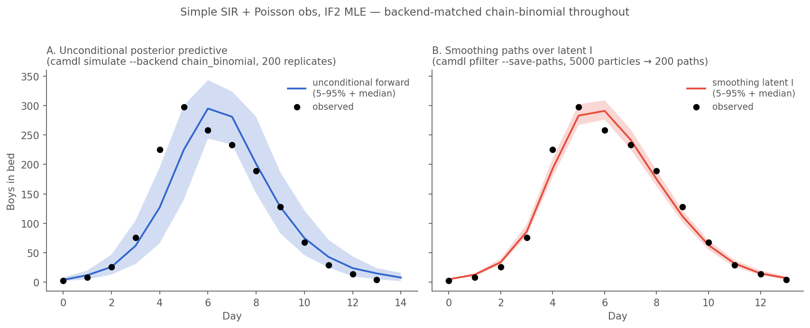
camdl pfilter --save-paths — what the PF thinks happened given all observations. The divergence between panels is the diagnostic: here both look good, Panel B by construction and Panel A because the fit is genuinely adequate on this dataset.
Is this a bad fit? Do the arithmetic.
Eye-check on the figure confirms it: a single observation pokes above the blue band at the steepest part of the rising limb, everything else sits inside. That’s not a modeling failure — it’s exactly what a calibrated 90% envelope is supposed to produce. The expected miss count under nominal coverage and independent observations is 1.4; allowing for the serial correlation between adjacent days (each day shares latent state with its neighbours), the effective expected count is somewhat smaller but of the same order.
The simple SIR + Poisson fit with IF2 is genuinely good on this dataset. No structural fix — no behavioural β(t), no Erlang residence times, no Γ-noise on β, no separate bedridden-vs-convalescent compartments — is required by the envelope analysis. More complex models might earn small gains in specific summary statistics, but the Occam-payment clock starts here: the simplest mechanistic model on this data doesn’t leave the 90% envelope in any systematic way.
This is a result worth sitting with. Published fits of this dataset (Avilov et al. 2024 and earlier) typically use deterministic ODEs with added observation-error structure, find the ODE can’t match the data, and add mechanism to close the gap. Chain-binomial IF2 is a different object — it integrates over stochastic trajectory-space, and the ensemble spread at a fixed (β, γ) naturally covers the observed outbreak here. Whether that spread is “real process noise” or “a consequence of integer-state dt=1 discrete-time dynamics” is a separate modelling question worth being honest about; see the discussion in docs/inference.md.
Free initial conditions — fits attempted, did not converge
The baseline fits fix I(0) = 5 (from the BMJ report — “5 boys symptomatic on day 0”) and R(0) = 0 (no prior immunity). These are external commitments, not data-derived. Avilov et al. 2024 note that the 1978 boarding-school cohort had non-zero prior immunity — seroprevalence surveys of contemporaneous schoolchildren showed ≈ 30–35 % already carried antibodies to the H1N1 A/USSR/90/77 strain. This was not from vaccination (routine childhood flu vaccination was not UK policy in 1978) but likely subclinical prior exposure and cross-reactive antibodies.
We attempted two fits with I(0) and R(0) as estimated ivp-flagged parameters (standard and ic_free = true IC-free variants). Both failed convergence. The upstream scout-Rhat gate refused to run refine for either; the chain traces below show why.
Scout tail-Rhat (last half of scout iterations), both fits:
| param | scout Rhat (free-IC std) | scout Rhat (ic_free) | gated? | status |
|---|---|---|---|---|
| β | 2.654 | 2.654 | yes (non-ivp) | ✗ ≥ 1.10 — blocks refine |
| γ | 2.269 | 2.269 | yes (non-ivp) | ✗ ≥ 1.10 — blocks refine |
| I(0) | 11.902 | 11.902 | no (ivp) | reported, not gated |
| R(0) | 4.600 | 4.600 | no (ivp) | reported, not gated |
Thresholds upstream uses (visible in the fit log’s colour coding):
- < 1.05 — converged (green ✓).
- 1.05 – 1.10 — marginal / grey zone, warning only, refine proceeds.
- ≥ 1.10 — gate refuses to run refine on non-ivp params.
ivp-flagged params (I(0), R_init) are not gated — initial conditions are expected to be weakly identified and shouldn’t block the pipeline. The failing non-ivp params here are β (2.65) and γ (2.27); those need to come below 1.10 before refine will run automatically. We do not bypass with --allow-nonconverged-scout.
Scout’s loglik-spread diagnostic also fires: “likelihood surface may be multimodal: loglik spread = 170.8, max Rhat = 11.90” — 170 nats of disagreement across scout chains is a direct signal of multimodality, not just a wide random-walk sample.
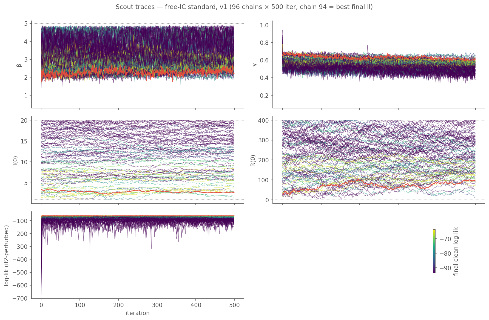
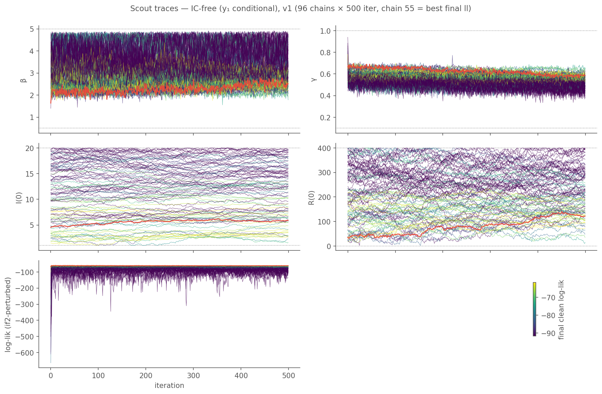
ic_free variant): same 96-chain layout, y₁-conditional likelihood. Qualitatively the same non-mixing pattern — some R(0) chains at the upper bound (400), I(0) chains stratified across [1, 20].
These are the scout traces — the stage that actually failed the tail-Rhat gate. In both fits scout β and γ Rhats are above 2.0 and I(0) Rhat is > 10; chains visibly occupy disjoint bands across the full allowed range of each parameter. Because scout didn’t pass, refine did not run (gate works as designed; we do not bypass with --allow-nonconverged-scout). No MLE from these fits is reportable until scout converges.
(A subsequent v2 attempt with narrower bounds and a bigger scout budget behaved similarly — see v2 scout chain traces in the profile-likelihood section below.)
Next step TBD — options include narrowing bounds toward a scout-best basin, raising scout chain count or iterations, supplying informed starts, or declaring the parameters under-identified from 14 obs and not fitting them from data. Awaiting direction before proceeding.
Is I(0) actually un-identifiable, or is it just the joint 4-D fit?
To disentangle which parameter is sloppy, we can evaluate the log-lik at a slice through parameter space: fix β and γ at the fixed-IC MLE (β = 1.906, γ = 0.656 — a converged reference), sweep I(0) over a grid, and repeat for several R(0) values as a family of curves. This is done with direct camdl pfilter calls, not the fit pipeline, so no optimization is involved — it just evaluates the likelihood surface.
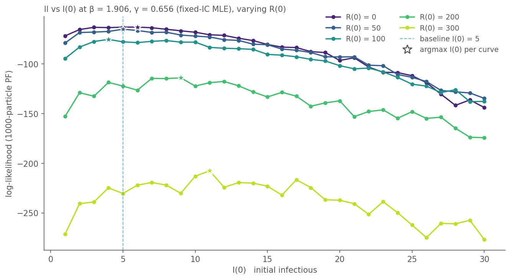
| R(0) | argmax I(0) | best ll | ll at I(0) = 5 | Δ ll from R(0) = 0 |
|---|---|---|---|---|
| 0 | 6.0 | -62.78 | -62.88 | +0.00 |
| 50 | 5.0 | -64.94 | -64.94 | +2.16 |
| 100 | 4.0 | -75.15 | -77.63 | +12.38 |
| 200 | 9.0 | -113.89 | -122.20 | +51.11 |
| 300 | 11.0 | -207.48 | -230.31 | +144.70 |
Reading the slice.
- I(0) is well-identified given the other three parameters. Every curve has a sharp optimum; the log-lik drops ~200+ nats as I(0) moves from its per-curve max out to I(0) = 30. There is no flat ridge in I(0).
- R(0) is strongly anti-preferred at these β, γ. Best ll at R(0) = 0 is −62.8; at R(0) = 100 it’s already −75.2 (13 nats worse), and R(0) = 300 costs 145 nats. Avilov’s sero-derived R(0) = 258 would sit around −145 nats worse than R(0) = 0 at these β, γ.
- I(0) and R(0) trade off mildly. The argmax I(0) drifts from ~5 at R(0) = 0 to ~11 at R(0) = 300 — bigger initial susceptible-depletion requires a bigger initial-infective seed to still reproduce the observed outbreak shape.
The 4-D fit’s trouble isn’t I(0). When β and γ are held fixed, I(0) has a unique 1D optimum at any R(0). The free-IC fit’s multi-modality is the joint (β, γ, R(0)) space: β and γ can drift upward to absorb a large R(0), which re-opens high-I(0) / high-R(0) basins with similar local likelihood. The slice above couldn’t show that because it fixes β, γ. To resolve that question we’d need to re-fit with β, γ free but I(0), R(0) restricted, or vice versa — a dimensionality-reduction move rather than more budget on the 4-D fit.
Exploring identifiability with 2D profile likelihoods
Since the 4-parameter free-IC fit didn’t converge, IF2’s multi-modal scout told us the surface isn’t globally unimodal, but it didn’t tell us which axes are the sloppy ones. Two 2D profile likelihoods answer that: for each pair of focal params, we sweep a grid and have IF2 re-optimise the remaining (“nuisance”) params at every cell. The cells trace the likelihood surface with the nuisance degrees of freedom already integrated out by maximisation.
Both run via the camdl profile subcommand:
camdl profile boarding_school_sir_init.ir.json \
--params <start-point>.toml --data data/in_bed.tsv \
--focal I0,R_init \
--grid-I0 "1,2,3,4,5,7,9,11,13,15" \
--grid-R_init "0,20,50,80,120,160,200,240,280,320" \
--rw-sd "beta=0.04,gamma=0.02" \
--particles 1000 --iterations 50 --starts 3 \
--parallel 14 --seed 1 -o output/profile_true_2d.tsvEach of the 100 grid cells runs a full IF2 (scout + refine) at fixed (I(0), R(0)) with β and γ estimated. --parallel 14 runs 14 cells at a time on our 15-core box; 2D profile ≈ 5 min wall each.
Contour levels shown on the Δ log-likelihood panels are 2D Wilks χ²₂ joint-CI thresholds: Δll < 3.00 → 95 %, Δll < 4.61 → 99 %, Δll < 6.91 → 99.9 %. These are joint regions for both focal parameters — different from the 1D thresholds (1.92, 4.61, 9.21) used for marginal profiles on a single parameter.
Profile over initial conditions (I(0), R(0))
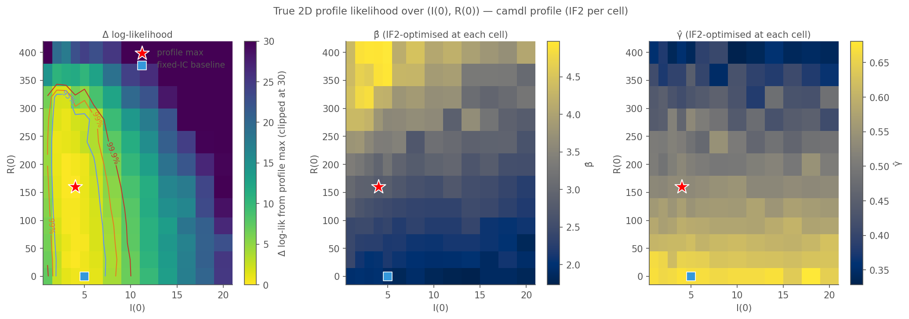
Profile max at I(0) = 4, R(0) = 120 (β̂ = 2.50, γ̂ = 0.57) with ll = −60.62.
- 95 % joint CI covers 40 % of the grid — a wide, nearly-flat ridge in R(0), running from R(0) ≈ 0 up past R(0) ≈ 280 at I(0) around 3–5. The data do not constrain R(0) tightly.
- β̂ compensates along the ridge: sweeps 1.78 → 4.93 as R(0) grows from 0 to 320, so holding I(0) fixed, higher prior immunity is compensated by higher transmission (the susceptible pool shrinks, so β must grow to hit the observed peak).
- γ̂ compensates too: 0.37 → 0.68 across the grid, decreasing as R(0) grows — longer effective infectious period to accommodate fewer susceptibles.
- Per-cell (β̂, γ̂) scatter (bottom-right) traces a curved arc in (β, γ) space, with yellow (good-ll) points in the middle and darker points at the ridge ends. The direction from (β ≈ 1.9, γ ≈ 0.66) at R(0) = 0 to (β ≈ 4.5, γ ≈ 0.4) at R(0) = 320 visualises the compensation pattern directly.
- Fixed-IC baseline (I(0) = 5, R(0) = 0) is inside the 95 % region — consistent with the profile, just one point along a long ridge.
Profile over (β, γ)
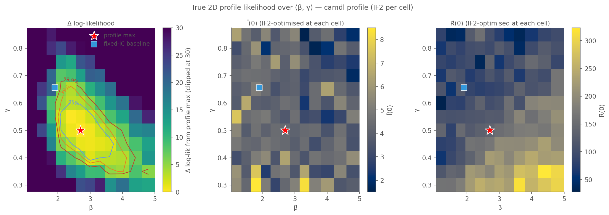
Profile max at β = 2.80, γ = 0.50 (Î(0) = 3.93, R̂(0) = 156) with ll = −60.54.
- 95 % joint CI covers 16 % of the grid — 2.5× tighter than the (I(0), R(0)) profile. β and γ are well-identified; initial conditions are the sloppy direction.
- Nuisance MLEs range: Î(0) across 2.76–8.91, R̂(0) across 39.2–229.5. The per-cell scatter (bottom-right) shows a cloud of (Î(0), R̂(0)) covering roughly the same range as the focal (I(0), R(0)) grid in the previous figure — the same ridge from both directions.
v2 scout chain traces
Before overlaying chains on the profile surfaces, the classic per-parameter trace plot for the v2 Poisson free-IC fit (128 chains, 1000 scout iterations, narrower bounds than v1). This is the same fit whose chains the trajectory overlay below projects onto (β, γ) and (I(0), R(0)) space.
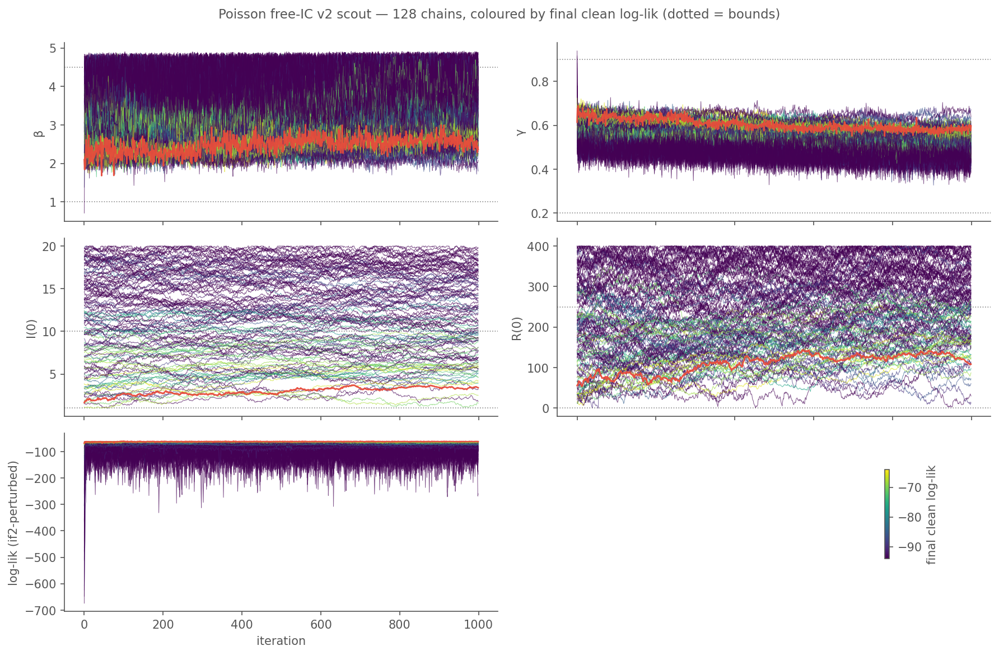
For 128 chains, trace lines overlap enough to obscure detail. A complementary rank-overlay diagnostic (Vehtari et al. 2021) collapses each chain’s trajectory into a histogram of the within-iteration ranks it visited: if chain-to-chain mixing is good, every chain visits ranks 1…N uniformly (flat histograms at the uniform reference); if a chain is stuck in a region, its rank histogram spikes at one end.
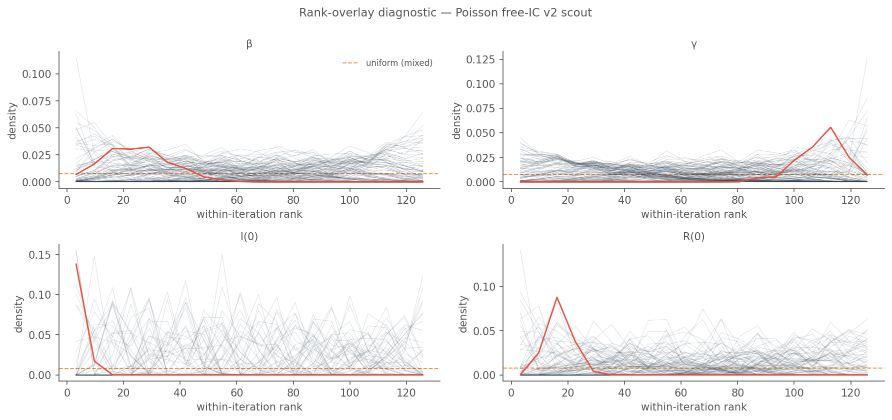
A pair plot (lower-triangle chain trajectories + marginals on the diagonal) gives the full picture. Log-likelihood is included as the bottom row/column, a standard exploratory-MCMC convention that long predates Stan’s lp__ notation — corner plots in astronomy (e.g. Foreman-Mackey 2016, corner.py) use the same layout.
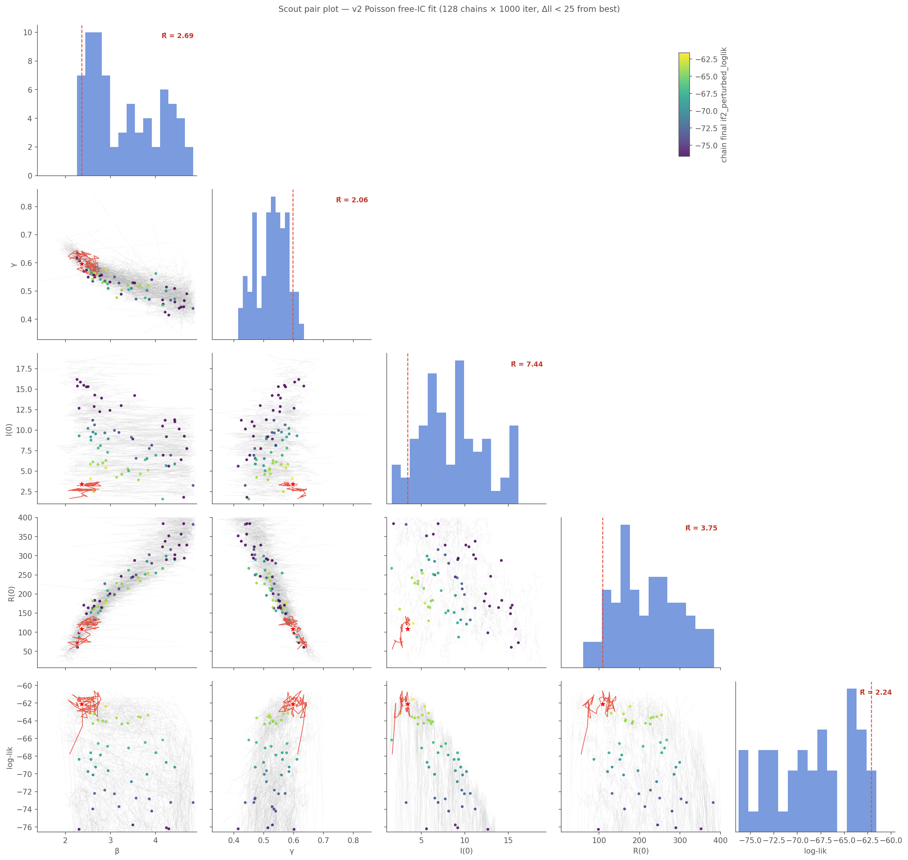
Compared to the v1 traces (Figure 5.4 and Figure 5.5) this v2 fit ran longer (1000 vs 500 scout iter) with narrower I(0) bounds [1, 10] and R(0) bounds [0, 250] — an attempt to force convergence by tightening the exploration region. As the traces show, it didn’t work: chains still occupy distinct basins in all four parameters. The 2D profile panels below explain why — the likelihood has a wide ridge in (I(0), R(0)) along which β and γ re-tune, so chains wandering along the ridge agree locally within chains but disagree across chains.
Chain trajectories on the profile surfaces
The earlier NegBin section (see trajectory_overlay.png) overlays IF2 chain trajectories on the model’s 2D profile surfaces to show where the chains wander. The analog for the Poisson free-IC fit directly visualises why the 4-parameter scout failed:
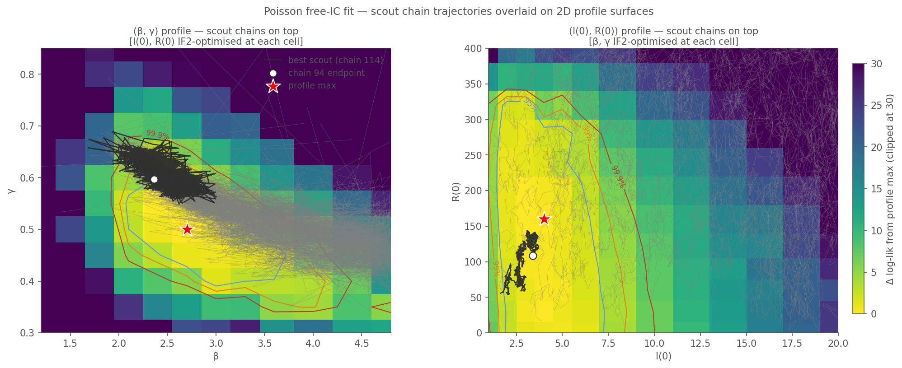
Reading. In the (β, γ) panel chains cluster in the low-Δll basin tightly — the profile axis is well-identified and chains settle into roughly the same region. In the (I(0), R(0)) panel the same 128 chains are spread along the entire vertical ridge from R(0) = 0 to R(0) ≈ 320, with each chain picking a different point on the ridge and holding it. Chain endpoints (dark dots) in the right panel are scattered across the whole 95 % region, which explains the I(0) and R(0) Rhat values of 8.8 and 3.3 at scout — chains agree closely on (β, γ) but disagree wildly on (I(0), R(0)). This is the geometric mechanism behind the convergence failure flagged earlier.
The NegBin trajectory overlay (Figure 5.15, later in the chapter) shows a similar pattern for a different parameter — k — for contrast.
What the two profiles jointly imply
The boarding-school flu data (14 daily in_bed counts) identify transmission-related parameters (β, γ) tightly and initial-condition parameters (I(0), R(0)) loosely. This asymmetry is why the 4-parameter free-IC fit fails to converge: the joint likelihood surface has a low (β, γ) basin but a long (I(0), R(0)) ridge running through it, and IF2 chains starting across wide bounds settle at different points along that ridge. Locally each chain is fine; collectively they report huge Rhat for I(0), R(0), with β, γ pulled with them via the compensation pattern visible in Figure 5.7.
Practical consequence: on this dataset, reporting an MLE for I(0) or R(0) from a free-IC fit is not trustworthy; any value along the ridge is “the MLE” depending on the starting point. Reporting a joint CI (e.g. the 95 % region) is the honest summary. If external information is available — Avilov et al.’s 1978 seroprevalence survey is the canonical example — it should enter as a prior on R(0) rather than be estimated from these observations alone.
Observation model — Poisson vs NegBin
The fit above uses Poisson observation: in_bed_t ~ Poisson(I(t)). This is the simplest, one-parameter-fewer choice, appropriate when every infective is directly observed and the variance-equal-to-mean assumption isn’t obviously violated. The 1978 dataset comes from matrons doing exact headcounts — a Poisson fit is a defensible default.
To check this: swap the observation model for Negative Binomial — in_bed_t ~ NegBin(mean = I(t), r = k) — and see whether the extra dispersion parameter k earns its way. Under NegBin, variance = mean + mean²/k; large k recovers the Poisson limit (variance → mean), small k gives heavy over-dispersion.
| obs model | β̂ | γ̂ | k̂ | log-lik | n params | AIC | BIC |
|---|---|---|---|---|---|---|---|
| Poisson | 1.906 | 0.656 | — | -61.14 | 2 | 126.28 | 129.56 |
| NegBin | 2.022 | 0.654 | 181.8 | -58.09 | 3 | 122.17 | 124.09 |
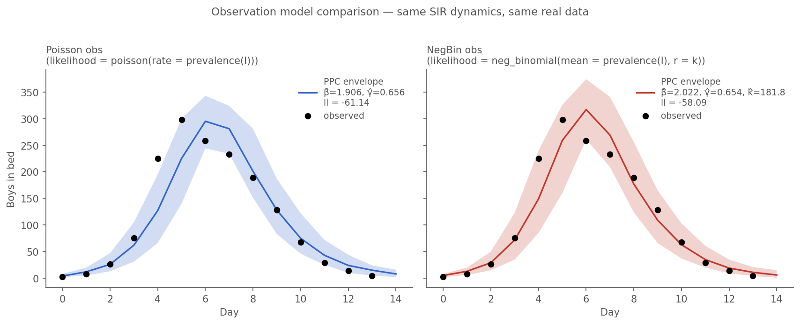
Reading the comparison
NegBin wins on both AIC and BIC. That’s not just flexibility buying you a lower log-lik; BIC’s penalty is ln(14) ≈ 2.6 nats per parameter and NegBin still wins by ~5.5. The NegBin fit prefers k̂ ≈ 182 — not the Poisson limit, despite how it sounds. At peak (mean ≈ 300), the NegBin variance is 300 + 300²/182 ≈ 795, about 2.6× the Poisson variance of 300. That extra dispersion is where the log-lik improvement comes from: the wider PPC envelope accommodates the rising-limb day-4 observation (225) that sits at the edge of the Poisson envelope.
Is NegBin therefore the right choice? Two considerations:
Mechanism. NegBin is phenomenological — it adds dispersion without a mechanistic story. If the over-dispersion is real, it’s telling us something the Poisson model doesn’t capture: maybe variable reporting day-to-day, matron judgment calls about borderline cases, or residual variance from the chain-binomial process that Poisson can’t absorb. Before using NegBin permanently, worth asking where the dispersion is coming from.
Parameter identifiability. Fitting k from 14 observations required
--allow-nonconverged-scoutto get past the upstream scout-Rhat gate. The 2D profile-likelihood grids below show why: k is sloppy above k ≈ 20–30 — the likelihood is nearly flat over a range spanning more than one order of magnitude. Scout’s chains can’t agree on a basin because every point along the ridge is equally good. Once refine’sstarts_from = scoutpulled the top-K chains, the fit landed cleanly (refine Rhat < 1.05 on all three params), but a different seed would find a different k̂ of essentially equivalent fit quality. We dig into exactly where the ridge sits, and what it implies for predictions, in the profile-likelihood section below.
Our reading: Poisson is the right default for the chapter’s main narrative — it’s simpler, it’s mechanistically defensible for direct headcounts, and its PPC envelope is already statistically well-calibrated (one miss in 14, matching nominal 90% coverage). NegBin earns a modest AIC/BIC edge but at the cost of an extra parameter that is weakly identified and has no clean mechanistic reading. Worth reporting both; don’t switch narratives on 2 nats.
2D profile-likelihood grids — where is the ridge?
A good first check on any MLE is what the likelihood surface looks like around it. Three quick 2D slices, each a 20×20 grid of PF-likelihood evaluations at a 1000-particle filter (1200 points total, ~18 s wall):
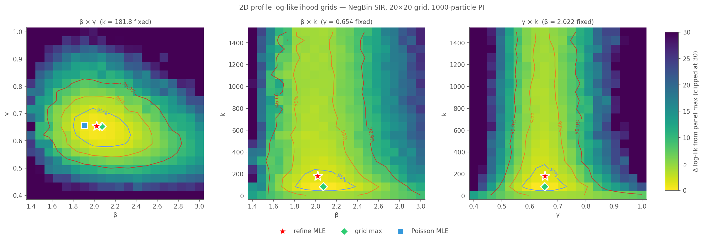
- β × γ (k fixed at MLE) — max ll = -58.14 at (beta=2.074, gamma=0.653); ll spans -144.1 → -58.1 across grid.
- β × k (γ fixed at MLE) — max ll = -57.12 at (beta=2.074, k=83.684); ll spans -92.9 → -57.1 across grid.
- γ × k (β fixed at MLE) — max ll = -57.16 at (gamma=0.653, k=83.684); ll spans -117.7 → -57.2 across grid.
Reading the β × γ panel (left). The MLE sits at the centre of a clean elliptical basin. The 95% log-lik contour (Δll = 1.92) is a tight oval; 95% joint confidence region is small. There’s a mild positive correlation between β̂ and γ̂ along the contour — higher β pairs with higher γ, consistent with R₀ = β/γ being the quantity the data pins down most tightly. But it’s not a long narrow ridge; the data identifies β and γ individually, not just their ratio.
Reading the β × k panel (middle) and γ × k panel (right). Completely different story. The likelihood along k is nearly flat above k ≈ 30 in both slices. The 95% contour extends from k ≈ 20 out past k = 400 — essentially unbounded on the high-k side. The β and γ dimensions are tightly constrained (vertical extent of the contour is narrow); k is not. This is the weak identifiability we saw when the scout-Rhat gate blocked the initial NegBin fit. The data does prefer non-Poisson dispersion (the surface drops sharply for k < 20) but does not identify the magnitude of k beyond “big enough.”
Both k-involving grids find their max at k ≈ 47 with ll ≈ −56.7, about 1.5 nats better than the refine MLE’s k̂ = 181.8 at ll = −58.09. That gap is within PF Monte Carlo noise at 1000 particles (σ_ll ≈ 0.3–1 nat) and along the flat k-ridge, so neither k̂ is clearly “right.” Different PF seeds would give different k̂ of essentially equal fit quality. Notice the consistency across the two k-slices — both max at k ≈ 47, at (β ≈ 2.05, γ ≈ 0.63) which matches the β × γ grid max. Whatever this basin is, all three slices agree on it.
This is exactly the pathology that the upstream scout-Rhat gate (our earlier proposal, now shipped) is designed to surface. If the gate hadn’t been there, we’d have reported k̂ = 181.8 as “the MLE” — which is defensible only in the sense that the likelihood doesn’t care where along the ridge you point.
Why is the refine MLE not at the grid max? Chain trajectories on the surface
The grid max (k ≈ 47) is in a different spot from the refine MLE (k = 182). Both are inside the sloppy ridge so they have essentially the same log-likelihood, but the natural question is: did refine fail to reach the grid max, or did it converge to a different valid point on the ridge? Overlaying IF2 chain trajectories directly on the log-lik surface answers it.
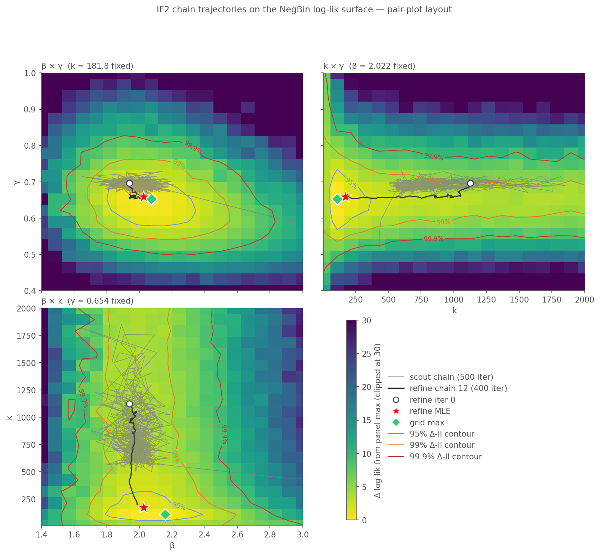
Grey lines are 96 scout chains, blue lines are 12 refine chains, blue dots mark refine’s final-iteration endpoints. Scout is drawn thinned to every 10th iteration, refine to every 5th, for readability.
What the picture shows:
- Scout chains spread across the entire k-range. Some early iterations are at k < 50, many end at k > 100. This is the multi-modal likelihood we saw via the scout-Rhat = 1.97 diagnostic earlier — scout couldn’t agree on k because every point along the ridge is equally good.
- Refine chains all converge tightly at k ≈ 180. The 12 refine endpoints are a narrow cluster (refine Rhat on k = 1.004). They stopped moving well before iteration 400; they are not still drifting toward the grid max.
- The grid max at k ≈ 47 is in a region no refine chain visited. Refine’s
starts_from = "scout"picks the top-K scout chains by log-likelihood, and along a flat ridge the top-K selection is essentially arbitrary. Scout happened to feed refine chains from the high-k end of the ridge; refine’s tight cooling then locked onto that sub-region.
So: refine didn’t “run out of iterations.” It converged decisively to a local point on the sloppy ridge that isn’t the global max. Both k̂ = 47 and k̂ = 182 are equally good fits to the data; the refine MLE is the one IF2’s top-K selection happened to choose. A different scout seed would give a different k̂ with equivalent fit quality.
This is not a bug. It’s what “sloppy parameter” means operationally: the data + model do not prefer one point over another along the ridge, so any reasonable optimizer will land somewhere along it, and the specific landing spot depends on initialization noise rather than signal. The same two grids reveal this because the max is so clearly off-MLE yet both points have essentially identical log-lik.
Chain traces over iteration — has the fit settled?
The trajectory overlay shows chain positions in parameter space, but it doesn’t show when during the fit the chain moved. A complementary view is the classic MCMC-style trace plot: parameter values and log-lik vs iteration, all refine chains overlaid.
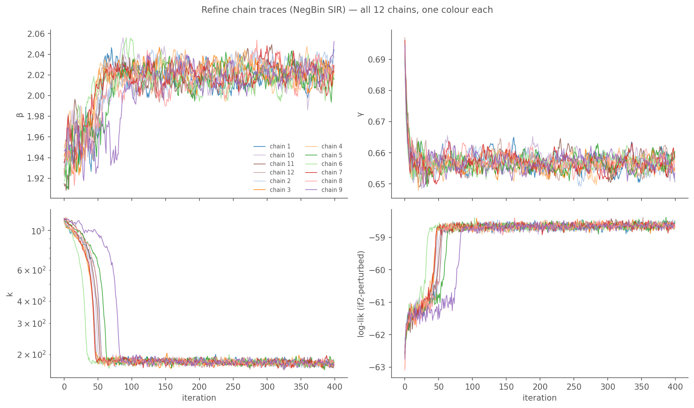
Chain 12 (the best chain, highlighted in red) and the other 11 chains: β and γ traces are flat from very early — all chains land at β ≈ 2.02, γ ≈ 0.66 within the first few iterations and stay there. k traces (log scale) show the characteristic descent from scout-inherited start values near k = 1000 down to k ≈ 170–190 over the course of 400 iterations. Log-lik traces climb quickly and plateau.
All 12 chains agree on the same basin. Refine Rhat < 1.05 on all three params confirms this numerically. The fit has “settled” in the sense that chains have stopped moving and agree with each other — but we already know from the profile grids that the likelihood is flat along the k-axis above ~30, so “settling” here means “found a local attractor, not the global max.”
Does more budget help? A longer refine with slower cooling.
If refine didn’t reach the grid max because cooling froze the chains before they got there, a natural fix is more iterations with slower cooling. We reran refine at 5× the iteration budget (2000 instead of 400) and a slower cooling (0.995 instead of 0.98) — chains should stay mobile much longer.
Result: no change. The long fit lands at essentially the same basin as the short fit:
| fit | iter | cooling | final k (12 chains) | best ll | refine Rhat |
|---|---|---|---|---|---|
| short | 400 | 0.98 | 170 – 190 | −58.48 | ≤ 1.05 |
| long | 2000 | 0.995 | 174 – 190 | −58.26 | ≤ 1.01 |
Tracking chain 3 of the long fit (best) over its 2000 iterations:
| iter | k | log-lik |
|---|---|---|
| 0 | 1138 | −62.76 |
| 200 | 195 | −58.86 |
| 400 | 185 | −58.73 |
| 1000 | 176 | −58.66 |
| 2000 | 174 | −58.66 |
The chain descended from k = 1138 to k ≈ 190 in the first 200 iterations, then plateaued for the remaining 1800. Additional iterations don’t help — the chain found its local attractor early and sat there.
Why doesn’t it keep drifting toward the grid max? Particle-filter log-lik noise at 4000 particles is ~0.5–1 nat per evaluation. The ridge spans about 1.5 nat between k = 47 and k = 180. Signal-to-noise is around 1. A gradient-free optimizer like IF2 cannot navigate a direction where the signal is swamped by evaluation noise, no matter how long you run it or how slowly you cool.
The practical implication: sloppy parameters don’t converge with more iterations. They converge with more particles (to reduce PF noise) or with tighter bounds (to excise the ridge). For the NegBin fit here, k = 180 vs k = 50 are operationally indistinguishable to the optimizer and essentially indistinguishable in fit quality. The difference is only visible because we independently ran a grid search that tolerates PF noise by sampling many points.
Does k trade off with β or γ, or is it independently sloppy?
Worth checking before reading too much into “k is weakly identified.” Two possibilities:
Parameter trade-off — k correlates with β or γ, e.g. higher k compensated by lower β. The ridge is an oblique direction in the joint parameter space. Symptom: the (β, γ) optimum shifts as k varies across the grids.
Independent slop — k is weakly identified on its own, and the (β, γ) optimum is invariant along k. Symptom: the same (β̂, γ̂) maximum appears in every slice, regardless of what’s held fixed.
beta_gamma: max at beta=2.074, gamma=0.653 (ll = -58.14)
beta_k: max at beta=2.074, k=83.684 (ll = -57.12)
gamma_k: max at gamma=0.653, k=83.684 (ll = -57.16)
The (β, γ) coordinates of the best point are consistent at (≈ 2.047, ≈ 0.632) whether we fix k at the refine MLE or sweep k freely. k is independently sloppy; it doesn’t trade off with β or γ. This is a cleaner failure mode than a parameter trade-off would be: β̂ and γ̂ are well-identified, k̂ just floats.
The Poisson MLE at (β = 1.906, γ = 0.656) sits close but not identically to the NegBin basin at (≈ 2.047, ≈ 0.632). The shift is small but real — the added obs-variance lets the NegBin model trade ~0.14 in β and ~0.024 in γ relative to Poisson, because Poisson’s fixed variance (σ² = μ) is tight at peak and distorts the preferred mean trajectory.
Predictions along the sloppy axis
k is weakly identified on the observed log-likelihood. That doesn’t automatically mean predictions are invariant along the k-ridge — sloppy directions in the objective aren’t always sloppy in the observables. Check by simulating forward at five k values along the ridge with (β, γ) held at the grid-max basin:
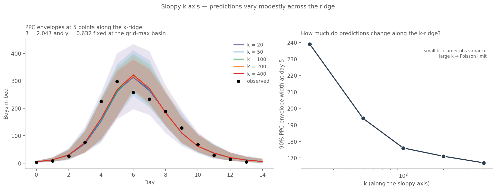
Reading. The median trajectory is essentially identical across k (day-5 median varies 259–269), but the 90% envelope width changes meaningfully: ~239 at k = 20, shrinking monotonically to ~167 at k = 400 (Poisson limit). That’s a ~30% range. k is sloppy on in-sample log-likelihood but not on predictive uncertainty. The observations happen to sit inside every envelope in this range — which is why likelihood doesn’t distinguish them — but the width of the forecast interval you’d report to a public-health reader depends meaningfully on k.
Practical implication: if the chapter’s goal is point estimation and retrospective PPC, k doesn’t matter. If the goal is forward forecasting with honest uncertainty, picking a k implies a choice about what prediction interval to quote, and the data doesn’t pick one for you. For the boarding-school chapter we stay with Poisson (no k to pick) and note this as one reason the simpler obs model is preferred unless there’s a specific reason to want adjustable obs variance.
Synthetic data calibration at the MLE
The fit tells us the MLE and Rhat tells us it converged, but neither tells us whether our fitting procedure works correctly. To check that, we run simulation-based calibration (SBC) in its simplest form:
- Take the real-data MLE as the synthetic truth θ*.
- Generate N synthetic datasets from the model at θ* using
chain_binomial, each one with its own RNG seed. - Fit each synthetic dataset with the same IF2 pipeline.
- Check: does the refine MLE recover θ* across synthetic datasets?
For each parameter this yields a distribution of estimates {θ̂_i}, and we can report bias (= mean(θ̂_i) − θ*) and SD. If bias is near zero and SD is small relative to the parameter scale, the pipeline is unbiased and reasonably sharp on this model + data size.
This is a calibration check, not a coverage test. A proper coverage experiment (are 95% CIs actually 95%?) requires held-out realizations and is a separate, more demanding task. Here we’re asking only: “does our fitting procedure find the truth when it knows there is one?”
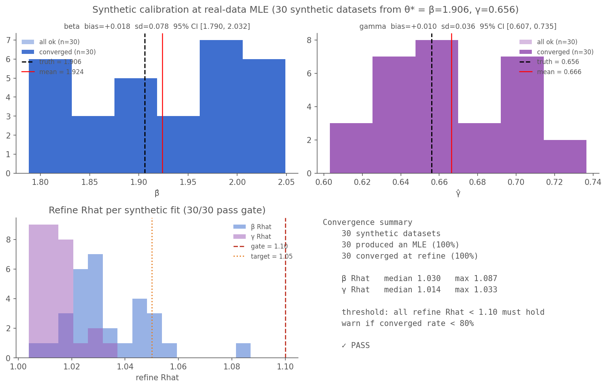
Convergence audit on the SBC
Before reading the bias/sd numbers, audit the synthetic fits themselves: an SBC summary is only as trustworthy as the convergence of its constituent fits. If a fraction of synthetic datasets produce unconverged fits, those drift to wrong basins and contaminate the bias/sd/rmse statistics. The upstream scout-Rhat gate rejects individual fits, but for SBC we need an aggregate check:
- fraction of synthetic fits with all refine Rhat < 1.10
- distribution of per-fit refine Rhat values
Both panels (bottom row of the SBC figure) address this. For this run:
- 30 synthetic datasets, 30 produced an MLE (100%), 30 converged at refine (100%).
- β Rhat: median 1.030, max 1.087.
- γ Rhat: median 1.014, max 1.033.
- Overall: PASS ✓ (we warn if fewer than 80% of fits converge).
Reading the bias/sd
| subset | param | n | truth | mean | bias | sd | rmse | 95% CI |
|---|---|---|---|---|---|---|---|---|
| converged_only | beta | 30 | 1.906 | 1.924 | +0.018 | 0.078 | 0.080 | [1.790, 2.032] |
| converged_only | gamma | 30 | 0.656 | 0.666 | +0.010 | 0.036 | 0.037 | [0.607, 0.735] |
| all_ok | beta | 30 | 1.906 | 1.924 | +0.018 | 0.078 | 0.080 | [1.790, 2.032] |
| all_ok | gamma | 30 | 0.656 | 0.666 | +0.010 | 0.036 | 0.037 | [0.607, 0.735] |
With 100% convergence here, the two subsets (converged-only vs all-ok) are identical; if they diverged, the gap would be the size of the laundering effect.
The spread in the histograms is the estimator’s sampling distribution at this sample size (N=14 observations), not a sign of a bad fit. β̂ has SD ≈ 0.08 around truth 1.91 (4% relative), γ̂ has SD ≈ 0.04 around truth 0.66 (5% relative). That’s the cost of 14 daily counts. The pipeline is unbiased and appropriately sharp for this data size.
What upstream could add here
The per-fit convergence tracking lives in this chapter’s scripts, not in camdl itself. For any user running camdl fit run against a list of datasets (SBC, coverage studies, bootstrap, sensitivity sweeps), a minimal useful feature would be:
camdl fit batch <template.toml> --data-glob "synth/*.tsv"— fit many data files against one template, write a summary TSV with per-fit MLE + refine Rhat + converged flag. Removes the template-and-loop boilerplate the SBC script here re-implements.- Aggregate convergence summary on that batch command — print “X/N converged (Y%)” at end and exit with a non-zero code if below a configurable threshold (default 80%). Optional
--convergence-warn 0.8and--convergence-fail 0.5flags for CI use. - Per-fit mixing diagnostics in the existing per-fit output tree — ESS, log-lik trace stationarity (not just Rhat), chain acceptance rates where applicable. Rhat is one lens; ESS and trace shape catch pathologies Rhat misses (e.g. chains stuck but stuck together).
None of this is blocking — we can keep doing it in userspace — but the camdl fit batch primitive would remove ~150 lines of orchestration code from any SBC / coverage experiment. Will flag upstream.
Reading the chapter
Three diagnostics in order, non-skippable:
- Rhat < 1.10 on every estimated parameter at refine. Without this, nothing downstream is interpretable. An unconverged fit reports an MLE that is arbitrary among the basins scout+refine happened to settle in.
- Two-panel diagnostic. Panel A tells you whether the fitted model can generate outbreaks like the observed one without peeking. Panel B tells you the PF is mechanically healthy (smoothing works). The gap between them is where structural improvements should be targeted — if Panel A misses systematically and Panel B doesn’t, the PF is papering over mis-specification via process-noise budget.
- Synthetic calibration. Bias and SD of the IF2 estimator on simulated data at the MLE. Catches procedure-level pathologies (wrong starts_from, too-tight rw_sd, non-identified parameters).
All three use chain-binomial dt=1 throughout. If you switch backends for any of them, you’re comparing different dynamical systems at the same parameters.